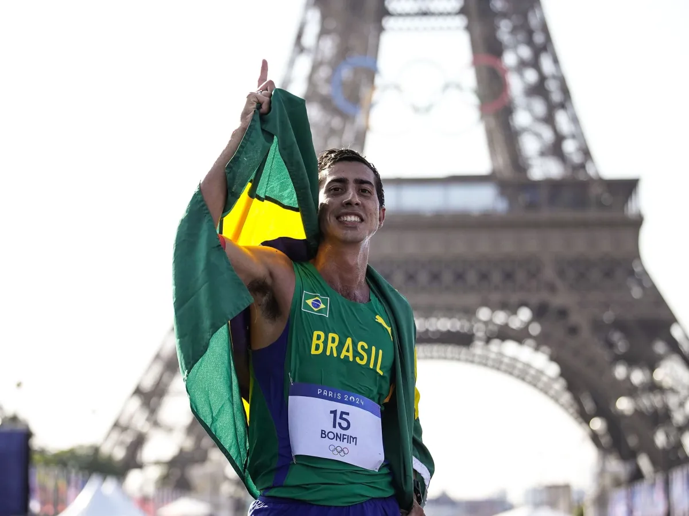

Seus desafios
- -Guadalajara 2011- Foi eliminado nos últimos 50 metros com 2 cartões vermelhos na prova de 20 km após percorrer 19.950m
- - Londres 2012- Não conseguiu ter sua melhor perfomance e terminou a prova em 39º lugar entre os 48 atletas que completaram a prova, com o tempo de 1h24min45s.
- - Toronto 2015- Caio conquistou a medalha de bronze nos 20 km, a primeira medalha brasileira na marcha atlética masculina do Pan desde o bronze de Marcelo Palma em Havana 1991.
- - Rio 2016- Conseguiu o melhor resultado da história do país na marcha atlética, terminando a prova de 20 quilômetros, sua maior especialidade, na quarta posição com o tempo de 1h19m42, então novo recorde brasileiro.
- - Londres 2017- Bonfim conseguiu a medalha de bronze, a primeira do atletismo brasileiro nesta modalidade, novamente baixando seu recorde brasileiro, com a marca de 1h19min04s.
- - Lima 2019- Ele obteve a medalha de prata nos 20 km marcha, ficando apenas 7 segundos atrás do equatoriano Brian Daniel Alvez.
- - Tóquio 2021- Terminou na décima terceira posição na marcha de 20km.
- - Budapeste 2023- Ficou novamente com a medalha de bronze, sua segunda em Mundiais, e estabeleceu nova melhor marca pessoal e recorde brasileiro, 1h17min47s.
- - Santiago 2023- Ficou com a medalha de prata nos 20 km dos Jogos Pan-Americanos de 2023, sua terceira medalha pan-americana.
- -Paris 2024 - Em Paris, obteve a medalha de prata na marcha de 20 km, sendo um feito inédito na história do Brasil na modalidade de Atletismo, sendo este o maior feito de sua carreira.
